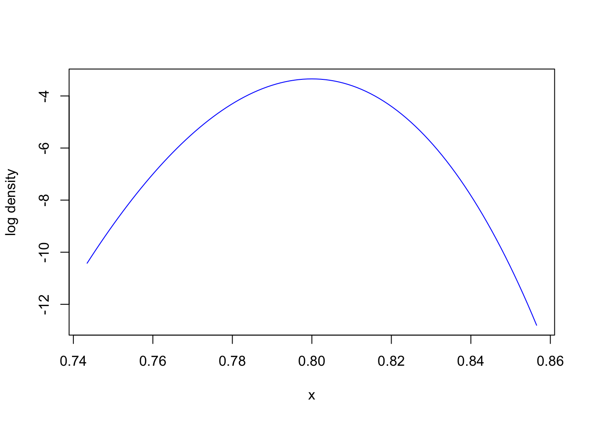
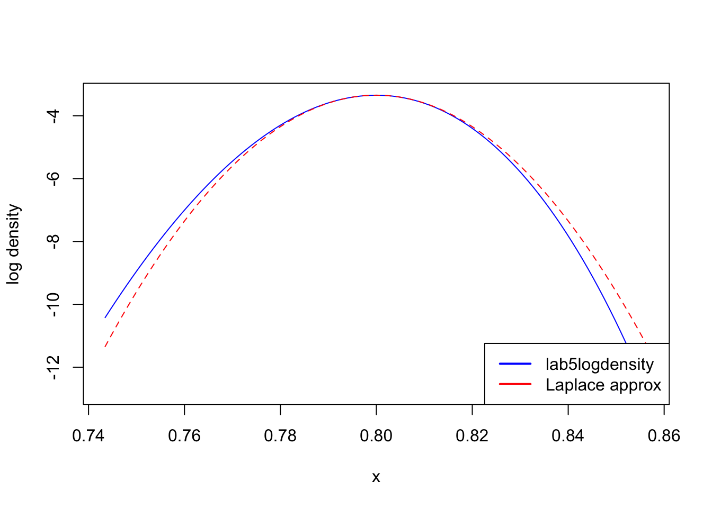

Laplace: an approximation to the posterior motivated by BvM.
Example of Laplace’s failure modes.
Rationale
Laplace approximation is a useful tool for some (but not all) Bayesian models. The Laplace approximation is attractive because it is sometimes very cheap to compute and accurate. Understanding that approximation will also help understanding the BvM theorem introduced in the previous page.
Laplace approximation: input and output
Input: an un-normalized density \(\gamma(x)\), where \(x\) is real-valued (or vector valued).
Output: an approximation \(q(x)\) for \(\gamma\) for which the normalization constant can be computed easily.
We have implemented \(\gamma(x) = p(x, y)\) for this model in R, in a function called lab5logdensity.
Code
lab5logdensity =function(x) {ifelse(x <0| x >1, -Inf, dbinom(n_successes, size = n_trials, prob = x, log =TRUE))}# we will also need a utility to maximize a function and get the second derivative at the optimummaximize =function(objective, start =0.5) { res =nlm(f =function(x) -objective(x), start, hessian =TRUE) # the negative signs here is because nlm minimizes, so we negated the objective, we convert back below...list(max =-res$minimum,argmax = res$estimate, second_derivative =-res$hessian )}n_trials =800n_successes =0.8* n_trials
Since we study the big data regime, we set the number of data points fairly large:
n_trials
[1] 800
The observed data \(y\) is:
n_successes
[1] 640
In the real world, we would not need the Laplace here since we know the posterior is a Beta distribution (by conjugacy, covered in the lab this week). But in real problem, it is rare that you can use conjugacy calculation, it is a fragile property.
Motivation
Let us look at the log density near the mode of the posterior:
opt =maximize(lab5logdensity, 0.5)second_derivative = opt$second_derivativezoomed_width =4/sqrt(-second_derivative)center = opt$argmax left = center - zoomed_widthright = center + zoomed_widthcurve(lab5logdensity, from = left, to = right, col ="blue", ylab ="log density")

Question: How would you approximate such a function?
Click for answer
A quadratic function seems a good candidate.
Specifically, a common way to do so is to do a Taylor expansion up to the second degree polynomial, centered at the mode.
Why the mode? For regular targets, this is where most of the posterior mass is concentrated (as shown in the lab this week). So we want our approximation to be good around the mode.
Taylor expansion
Notation: denote the function above by \(\ell(x) = \log \gamma(x)\).
Notation: denote the MAP (i.e., \(\operatorname{arg\,max}\ell\)) by \(\hat x\).
Recall Taylor’s theorem (shown here for the second order):
\[\ell(x) = \ell(\hat x) + \ell'(\hat x) (x - \hat x) + \frac{\ell''(\hat x)}{2!}(x - \hat x)^2 + R(x),\] where different flavours of Taylor’s theorem will give different types of control of the residual error term \(R(x)\) (we will not go into that level of detail today).
Question: one term in the Taylor expansion is zero. Which one? Why?
Click for answer
The second term is zero, since \(\ell'(\hat x) = 0\). This is because \(\hat x\) is the location of the maximum. Hence assuming that \(\hat x\) is an interior point, the derivative at this point is zero.
So removing the zero term and ignoring the residual, we obtain the Laplace approximation:
All the ingredients in the Taylor approximation can be obtained using an optimizer package. For the second derivative, either automatic differentiation or finite differences can be used.
Here is a simple implementation:
laplace_approx =function(opt) { x_hat = opt$argmax maximum = opt$max second_derivative = opt$second_derivative approx =function(x) {return(maximum + second_derivative /2* (x - x_hat)^2) }return(approx)}laplace =laplace_approx(opt)curve(lab5logdensity, from = left, to = right, col ="blue", ylab ="log density")curve(laplace, from = left, to = right, add =TRUE, col ="red", lty =2)legend("bottomright",legend =c("lab5logdensity", "Laplace approx"),col =c("blue", "red"),lwd =2)

As you can see, the approximation is quite good where it matters (near the mode)!
Let use denote the Laplace approximation by \(\log q\):
The key ingredient of the shortcut is (the proof of it is reviewed in the lab this week):
Proposition: if two densities are proportional, \(f_1 \propto f_2\) then they are equal, \(f_1 = f_2\).
So since we know that \(q\) is proportional to a normal, it is a normal, and so that means we can look at wikipedia page to get the value of that constant. You will find it is \(1/\sqrt{2\pi\sigma^2}\). In other words, someone solved the above integral for you (and that’s good because that integral is tricky to work out!).
Asymptotic analysis of Laplace’s approximation quality
Consider the same setup as BvM (increasing random datasets).
Denote the variance of the Laplace approximation computed from \(Y_{1:n}\) by \(\sigma^2_n\).
Recall that the asymptotic normal distribution in BvM had variance \(-I_n^{-1}\).
To see why, notice that the second derivative of \(\ell\) is the sum of the prior’s second derivative at \(\hat x\), denoted \(-S = (\log p)''(\hat x)\), and the observed information \(-I_n\): \[\begin{align*}
\log \gamma(x) &= \log p(x, y) \\
&= \log p(x) p(y|x) \\
&= \log p(x) + \log p(y | x), \\
\Longrightarrow \underbrace{\frac{\partial^2}{\partial x^2} \log \gamma(x) }_{\ell''(x)} &= \underbrace{\frac{\partial^2}{\partial x^2} \log p(x)}_{-S} + \underbrace{\frac{\partial^2}{\partial x^2} \log p(Y_{1:n} | x)}_{-I_n}.
\end{align*}\]
hence
\[
\lim \frac{\sigma^2_n}{-I_n^{-1}} = \lim \frac{I_n}{S + I_n} = \lim \frac{\frac{1}{n} I_n}{\frac{1}{n} S + \frac{1}{n} I_n}.
\] Finally, \(\frac{1}{n}S\) converges to zero, while by the law of large numbers, \(\frac{1}{n} I_n\) converges to a constant, namely the Fisher information, \(\mathbb{E}[I_n]\).
Conclusion:
The Laplace approximation converges to the same normal as the one appearing in BvM.
Hence, when BvM applies, the Laplace approximation also gets arbitrarily accurate as \(n \to \infty\).
Estimating expectation from a Laplace approximation
Option 1: for some test functions \(g\), you can use known expression from the normal (e.g. to compute posterior mean, variance).
Option 2: use simple Monte Carlo, where the i.i.d. samples come from the Laplace approximation.
Option 3: use the Laplace approximation as a proposal in SNIS.
With SNIS+Laplace, even for finite \(n\), the error in the Laplace approximation gets corrected in the large \(M\) regime.
Multivariate version
The second derivative is simply replaced by the Hessian matrix \(M\) at \(\hat x\),